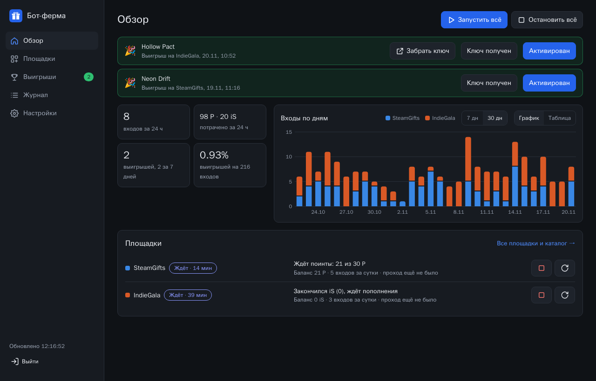

Ферма раздач игр
SteamGiftBot сам входит в раздачи на SteamGifts, IndieGala и OpiumPulses, забирает бесплатные игры в Steam, GOG и itch.io и сообщает в Telegram, когда вы выиграли. Управляется из веб-панели, которая работает на вашем компьютере.
Бесплатно, без рекламы и подписок. Открытый код под лицензией MPL-2.0. Пароли от сайтов ферме не нужны: она входит по cookie из вашего браузера.

Что делает ферма
Входит в раздачи по вашим правилам
Часы работы, дневные лимиты на входы и траты, пропуск DLC, игр 18+ и игр, которые уже есть в вашей библиотеке Steam. По желанию игры из списка желаемого идут первыми.
Показывает, что возьмёт
Пробный проход выводит все текущие раздачи и для каждой пишет, войдёт ли ферма и почему нет. Ничего не тратит.
Следит за выигрышами
Выигрыши со всех сайтов в одной таблице, с ключом и отметками «получен» и «активирован». Ключ можно активировать в Steam через ArchiSteamFarm одной кнопкой.
Пишет в Telegram
О каждом выигрыше, о cookie, которые скоро истекут, и сводку за сутки. Командами /status, /pause и /run можно управлять фермой из чата.
Ведёт несколько учёток
У каждого человека — свой набор сайтов, свои лимиты и история, и свой аккаунт Steam для ключей.
Открывается с телефона
Дома — по адресу компьютера в сети, вне дома — через Tailscale. Панель на русском, украинском и английском, её можно добавить на главный экран.


Площадки
Каждый сайт подключается в панели по инструкции: вы копируете запрос из браузера (F12 → Network → Copy as cURL), ферма проверяет его на сайте и показывает аккаунт и баланс.
| Сайт | Что делает ферма | Что нужно |
|---|---|---|
| SteamGifts | входит в раздачи за поинты, начиная с лучшего шанса на поинт | cookie из браузера |
| IndieGala | входит в раздачи за Galasilver, проверяет выигрыши | cookie из браузера |
| OpiumPulses | входит в бесплатные раздачи и раздачи за OP | cookie из браузера |
| Steam | добавляет в библиотеку игры, которые Steam раздаёт навсегда | запущенный ArchiSteamFarm |
| GOG | забирает раздачу с главной страницы | cookie из браузера |
| itch.io | забирает игры со скидкой 100% | cookie из браузера |
Установка
Windows
- Скачайте BotFarm.exe и положите в отдельную папку: настройки и история хранятся рядом с программой.
- Запустите. Ферма один раз спросит пароль для панели и откроет её в браузере.
- В разделе «Площадки» подключите первый сайт.
У программы нет цифровой подписи, поэтому Windows может предупредить о неизвестном издателе. Сверить файл с опубликованным: certutil -hashfile BotFarm.exe SHA256 и сумма из релиза.
Linux и macOS
Нужен Python 3.10 или новее.
git clone https://github.com/PalmaLuv/SteamGiftBot.git
cd SteamGiftBot
python3 -m venv env
env/bin/pip install -r requirements.txt
env/bin/python -m steamgiftbot.farm --set-password
env/bin/python -m steamgiftbot.farm --host 192.168.1.10Вместо 192.168.1.10 — адрес компьютера в домашней сети. Как сделать ферму службой systemd — в вики.
Docker
docker run --rm -v botfarm:/app/data -e BOTFARM_PASSWORD=пароль \
--entrypoint python ghcr.io/palmaluv/steamgiftbot \
-m steamgiftbot.farm --data /app/data --set-password
docker run -d --name botfarm --restart unless-stopped \
-p 127.0.0.1:8092:8092 -v botfarm:/app/data \
--entrypoint python ghcr.io/palmaluv/steamgiftbot \
-m steamgiftbot.farm --host 0.0.0.0 --data /app/dataОбраз собран для amd64 и arm64 и работает не от root.
Если нужна только SteamGifts без панели, есть бот для командной строки: SteamGiftBot.exe или python main.py. Описание — в README.
Риски
SteamGifts запрещает скрипты автоматического входа в раздачи, у других сайтов свои правила, и аккаунт могут заблокировать. Ферма делает паузы между запросами, отступает, когда сайт просит подождать, и не обходит Cloudflare и капчи, но решение и риск остаются за вами. Перед подключением сайта панель напоминает о его правилах.
Вопросы
Ферма знает мои пароли?
Нет. Она входит по cookie, скопированным из браузера, и хранит их только на вашем компьютере. Панель не показывает их обратно даже вам.
Нужен отдельный сервер?
Нет. Подойдёт любой компьютер, который не выключается: мини-ПК, старый ноутбук, Raspberry Pi. Ферма почти всё время ждёт и нагрузки не создаёт.
Почему ферма ни во что не входит?
Откройте у площадки вкладку «Что возьмёт»: у каждой раздачи там написана причина. Чаще всего кончился баланс или в настройках указан не тот уровень аккаунта.
Чем это отличается от расширений вроде AutoJoin?
Расширение работает, пока открыт браузер, и только на SteamGifts. Ферма работает круглосуточно, ведёт шесть площадок сразу, пропускает игры, которые уже есть в Steam, и сообщает о выигрышах в Telegram.
Это официальный проект SteamGifts?
Нет. SteamGiftBot — независимый проект с открытым кодом, не связанный со SteamGifts, IndieGala, OpiumPulses, GOG, itch.io и Valve.
Поддержать проект
SteamGiftBot делает один человек в свободное время. Если ферма вам пригодилась, можно поддержать разработку через GitHub Sponsors или Buy Me a Coffee, или переводом в TON: UQBhyAtIaZxHiiLsLjmJtnG8sFmNiG77k2xkWfgr0xka7X2J. Все функции бесплатны и останутся бесплатными.